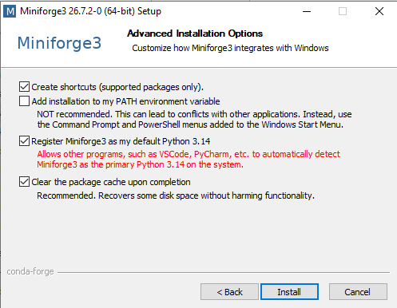

Installing Python on your computer#
 This chapter contains some instructions about how to install Python on your personal computer.
This chapter contains some instructions about how to install Python on your personal computer.
There are many ways to install Python on your computer (and while most of them work, some of them are less practical than others for scientific applications). Unless you know what you are doing (i.e.: you have been doing this before), please follow these instructions exactly.
Important! What to do if you already have Python installed on your laptop
If you already have anaconda / conda / miniconda installed:
You can keep your installation if it works for you and if you know what you are doing, i.e., you can install new packages and create new environments. If you are not totally sure, it is recommended to start with a clean installation. To start from scratch, uninstall anaconda and follow the instructions below.
Installation#
On Windows#
Go to the miniforge download website and download the Miniforge installers for Windows.

Double-click the .exe file.
Follow the instructions on the screen.
If you are unsure about any setting, accept the defaults. You can change them later. At this stage, we recommend:


On macOS and Linux#
For these platforms, there is no need to download the files yourself. Open a terminal and type:
curl -L -O "https://github.com/conda-forge/miniforge/releases/latest/download/Miniforge3-$(uname)-$(uname -m).sh"
bash Miniforge3-$(uname)-$(uname -m).sh
or, if this does not work:
wget "https://github.com/conda-forge/miniforge/releases/latest/download/Miniforge3-$(uname)-$(uname -m).sh"
bash Miniforge3-$(uname)-$(uname -m).sh
The first command downloads the tool, and the second installs it. Follow the prompts on the installer screens.
If you are unsure about any setting, accept the defaults except for the last question asking you if you wish to run conda init: here, answer “yes”.
To make the changes take effect, close and then re-open your terminal window.
Testing your installation#
To see if everything worked well, open a terminal (macOS and Linux). On Windows, open the miniforge prompt (from the Start menu, search for and open “miniforge prompt”):

and type in:
mamba list
You should see a long list of package names.
If you type:
python
A new Python prompt should appear, with something like:
Python 3.14.7 | packaged by conda-forge | (main, Sep 2 2026, 21:12:42) [MSC v.1944 64 bit (AMD64)] on win32
Type "help", "copyright", "credits" or "license" for more information.
>>>
You can type exit() to get out of the Python interpreter.
Optional: conda, mamba, conda-forge?
We have just installed minimal installers for Conda and Mamba, which are pre-configured to use conda-forge as default channels to download the Python packages we will use later in class (instead of Anaconda channels). In addition, we can now use mamba as the default Python package install tool (instead of conda). mamba install behaves exactly like conda install, but is significantly faster.
What is this Python “interpreter”?#
Start with reading the definition from the Tech Terms Dictionary.
Put simply, the Python interpreter is a program executing Python programs or commands. It reads the programs you write and executes the instructions they contain. We will look into interpreters in a little more detail later in the semester, when we will talk about compiled and interpreted languages.
What is a “Python installation”?#
Explanation for Windows users : the difference between the command prompt, the miniforge prompt, and the Python interpreter
Explanation for Linux/macOS users : the terminal, the miniforge installation, and the Python interpreter
Learning checklist#